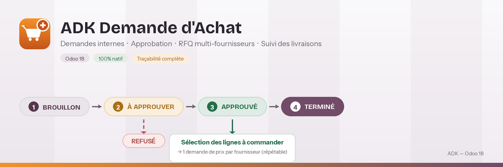
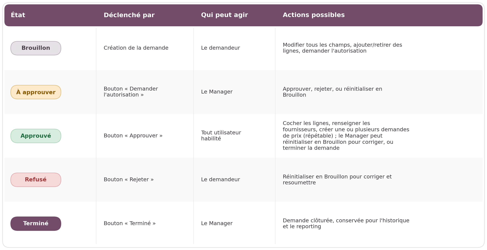
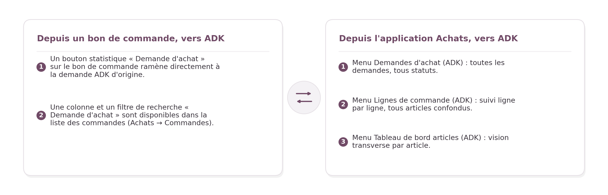
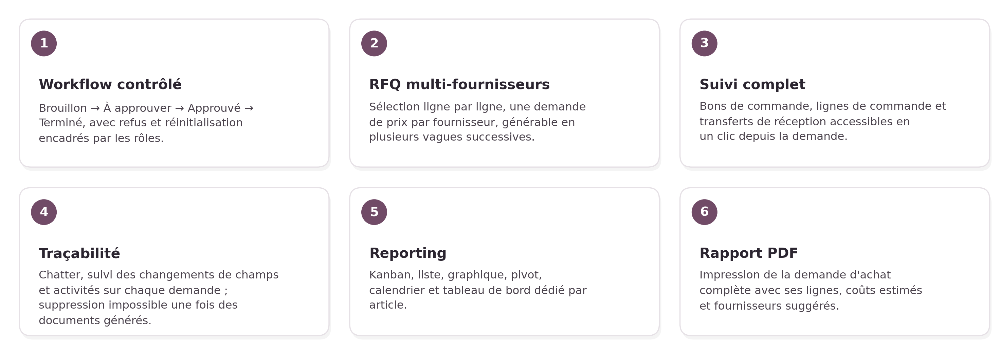

Gestion complète des demandes d'achat internes dans Odoo 18 : circuit d'approbation, sélection des lignes pour la demande de prix (par fournisseur, en plusieurs vagues si besoin), suivi des commandes et des réceptions, tableau de bord par article — le tout intégré nativement dans l'application Achats.
Odoo 18 · Circuit d'approbation · RFQ multi-fournisseurs · Suivi des livraisons · Reporting par article⚠ Rôles utilisateurs et droits d'accès — à lire avant d'installer
Le module ajoute deux rôles d'accès. Vérifiez qu'ils correspondent à l'organisation de votre équipe avant la mise en production.
Utilisateur Demande d'Achat
- Crée ses propres demandes d'achat et leurs lignes d'articles
- Peut les modifier tant qu'elles restent en Brouillon
- Accès en lecture/écriture aux demandes et à leurs lignes (aucune suppression)
- Hérite automatiquement des droits Achats (Utilisateur) et Stock (Utilisateur) nécessaires pour consulter les bons de commande et transferts générés
Manager Demande d'Achat
- Cumule tous les droits Utilisateur, plus les droits Achats (Manager)
- Seul habilité à Approuver, Rejeter ou Terminer une demande
- Seul habilité à réinitialiser en Brouillon une demande déjà Approuvée
- Accès complet (création/modification/suppression) sur les demandes et leurs lignes
Le processus, étape par étape
1. Droits d'accès
Depuis Paramètres → Utilisateurs et sociétés → Utilisateurs, chaque collaborateur reçoit l'un des deux rôles du module dans la section « Achats » de sa fiche : Utilisateur Demande d'Achat ou Manager Demande d'Achat (voir le détail des droits ci-dessus).

2. Création de la demande (Brouillon)
Le demandeur crée sa demande : département, approbateur, site de livraison, société, unité opérationnelle, devise, puis ajoute ses lignes d'articles (quantité, coût unitaire estimé, date souhaitée, destination). Tant que la demande reste en Brouillon, tous les champs et toutes les lignes restent modifiables. Un clic sur « Demander l'autorisation » vérifie qu'un approbateur est renseigné et que chaque ligne a un article et une quantité strictement positive, puis transmet la demande au manager.

3. Approbation par le manager
La demande passe à l'état À approuver et se verrouille : seul un Manager Demande d'Achat peut cliquer sur « Approuver » ou « Rejeter ». En cas de refus, ou pour corriger une erreur avant approbation, le bouton « Réinitialiser » repasse la demande en Brouillon.

4. Sélection des lignes et création de la demande de prix
Une fois Approuvée, la demande n'est pas encore commandée. Sur chaque ligne encore « À commander », on coche « Inclure DP » et on renseigne le fournisseur suggéré, puis on clique sur « Créer une demande de prix ». Le module regroupe automatiquement les lignes cochées par fournisseur et génère une demande de prix (RFQ) distincte pour chacun. Cette étape est répétable : les lignes non cochées restent disponibles pour une prochaine vague de commande, par exemple pour commander le reste plus tard ou auprès d'un autre fournisseur.

5. Suivi des commandes et des réceptions
La demande garde un lien direct vers tous les documents générés : bons de commande, lignes de commande et transferts de réception, accessibles via des boutons statistiques en haut du formulaire. Pour chaque ligne, le statut d'achat (À commander / Commandé / Reçu) ainsi que les quantités et montants commandés/reçus se mettent à jour automatiquement à partir des bons de commande liés.

6. Tableau de bord par article
Le menu « Tableau de bord par article » offre une vision transverse de tous les articles demandés, tous statuts confondus : vues Kanban, graphique, tableau croisé et liste, avec filtres par article, par n° de demande d'achat, par fournisseur, par état et par période (jour / mois / trimestre / année).

7. Analyse croisée des quantités et des montants
La vue tableau croisé (pivot) détaille, par article et par demande d'achat, les quantités demandées, commandées et livrées, ainsi que les montants estimés, commandés et reçus, période par période.

8. Cycle de vie d'une demande
Cinq états, un circuit clair : le schéma ci-dessous montre qui déclenche chaque transition ; le détail complet est repris juste en dessous.


Verrouillage des données : une fois sortie du Brouillon, la demande verrouille ses champs d'en-tête et ses lignes existantes (seules les cases « Inclure DP » et « Fournisseur suggéré » restent modifiables en Approuvé, le temps de préparer les demandes de prix). Impossible de contourner le circuit d'approbation en modifiant discrètement une ligne après coup.
Protection anti-suppression : une demande d'achat ne peut pas être supprimée si elle a déjà généré au moins un bon de commande, une ligne de commande ou une réception — la traçabilité complète est ainsi garantie.
9. Intégration native avec l'application Achats
Aucun aller-retour entre applications : chaque document reste relié à son origine, dans les deux sens.

10. Fonctionnalités

Module 100% natif Odoo 18, construit sur les applications Achats (purchase, purchase_stock), Stock, RH et Discuss (mail), sans dépendance externe.